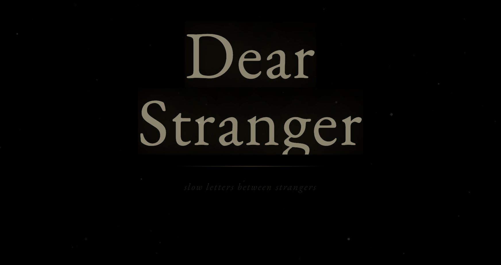
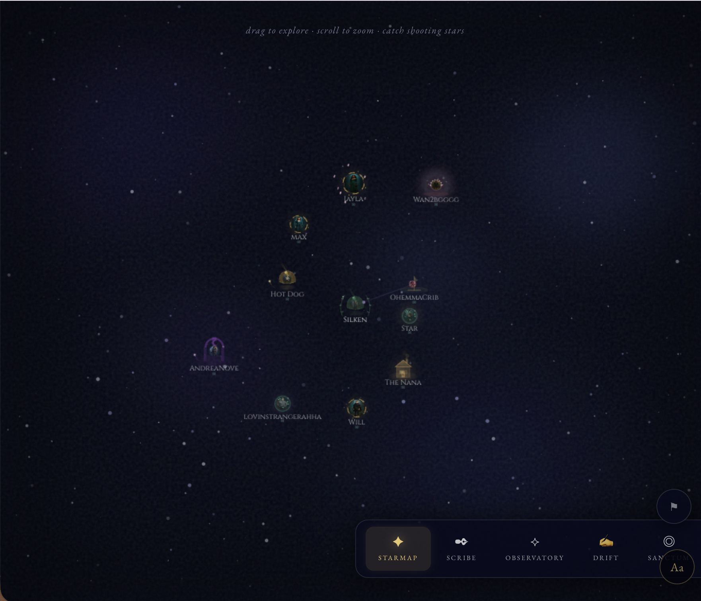
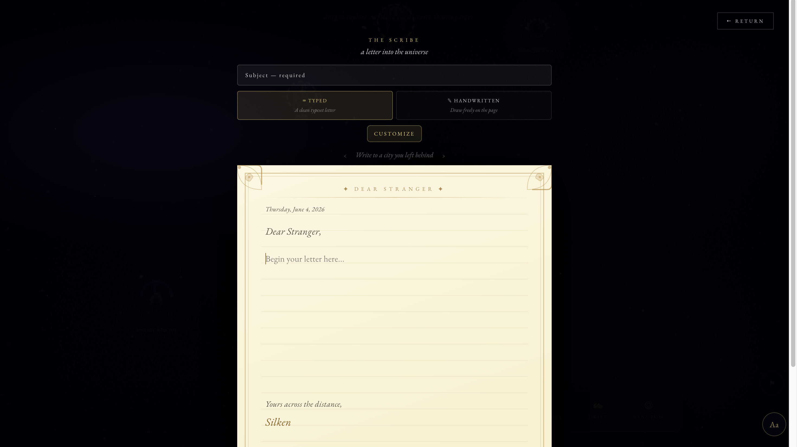

Dear Stranger asked a product question most social platforms avoid: what if slowness was not friction, but the feature?

The idea came from watching how isolation can persist even when someone is constantly online and surrounded by people. Most digital products optimize for speed, visibility, and response loops. That makes them good at activity, but not always good at sincerity.
We built Dear Stranger as a collaborative class project, but my contribution was specific. I owned the experience of discovering people, entering their personal space, and writing to them. My job was to make a vulnerable interaction feel safe enough to try.
Context
Project type: collaborative class project. Product type: social platform. User need: a lower-pressure way to connect with strangers without performing for an audience or managing instant replies. The project was exploratory, but we treated it like a real product problem rather than a visual concept. That meant the experience had to be coherent enough for actual people to move through it, not just interesting enough to present in class.
Problem
The core problem was not just loneliness. It was the fact that existing products make first contact feel exposed, noisy, and disposable. Feeds reward visibility. Messaging apps reward speed. Both create pressure to be clever, fast, and socially fluent. If the goal was thoughtful connection, the interface could not behave like a feed or a chat app because those patterns would have pushed users into performance instead of reflection.
What I Owned
I led the UX for the star map discovery flow, the structure of each user's hub, and the letter-writing experience. I also defined much of the visual direction for those flows, including how discovery should feel, how profiles should be framed, and how the act of writing should slow the user down instead of rushing them forward. In practical terms, I was responsible for the parts of the product that determine whether a stranger feels approachable, whether the interface feels intimate or impersonal, and whether writing feels meaningful enough to complete.

Constraint
The biggest constraint was conceptual. We were building a social product, but the usual social patterns would have broken the premise. If we made discovery too efficient or communication too immediate, the product would drift back into the same performative behavior it was supposed to resist. There was also a presentation challenge: the product needed to feel emotionally distinct without becoming confusing or overly abstract. If the metaphor became more important than the usability, the idea would collapse under its own aesthetic.

Key Design Decisions
I used the star map as the discovery model because it made exploration feel deliberate rather than feed-driven. That choice changed the emotional posture of the product immediately. Instead of scrolling past people, users move toward them. I designed each person's hub to feel like entering a space, not opening a profile card, because that shift adds emotional weight and slows judgment. I kept letter writing asynchronous because waiting was part of the value proposition, not a system weakness. Visually, I used darkness to represent distance and warm gold to prevent the interface from feeling emotionally sterile. I also leaned into editorial typography so the writing flow would feel reflective rather than chat-like.
Why Those Decisions Matter
Every choice had the same job: reduce performance pressure. The product needed to signal that users did not have to be witty, immediate, or highly visible to participate. That is why the flow is slower, the visuals are quieter, and the writing interface feels more ceremonial than transactional. The design rationale only works if the emotional promise is consistent across the whole journey. If even one part of the flow suddenly behaved like a standard social app, the experience would feel incoherent and the trust the interface was trying to build would disappear.
Tradeoff
The main tradeoff was accessibility versus novelty. A more conventional interaction pattern would have been easier to understand immediately, but it would also have undermined the premise. I accepted a slightly less familiar interaction model because the emotional behavior of the product mattered more than short-term pattern recognition. The job was not to mimic existing social products better. It was to create a different emotional outcome.
Outcome
Dear Stranger shipped as a live product at dearstranger.xyz. The best evidence of success is that the concept moved beyond classwork into actual behavior: users created hubs, explored the network, and sent letters. For this project, the real outcome was proving that an unconventional social interaction model could be implemented as a functioning product and used by real people. That matters because many student projects stop at the concept stage. This one had to hold up as an interactive system with enough coherence that strangers could understand what to do and why the product was different.
What Would Strengthen This Case Study
To make this story even stronger for recruiters, I should add the early discovery sketches, the hub wireframes, and at least one iteration that shows how the writing flow changed over time. The product idea is distinctive; the next step is making the process evidence equally visible.